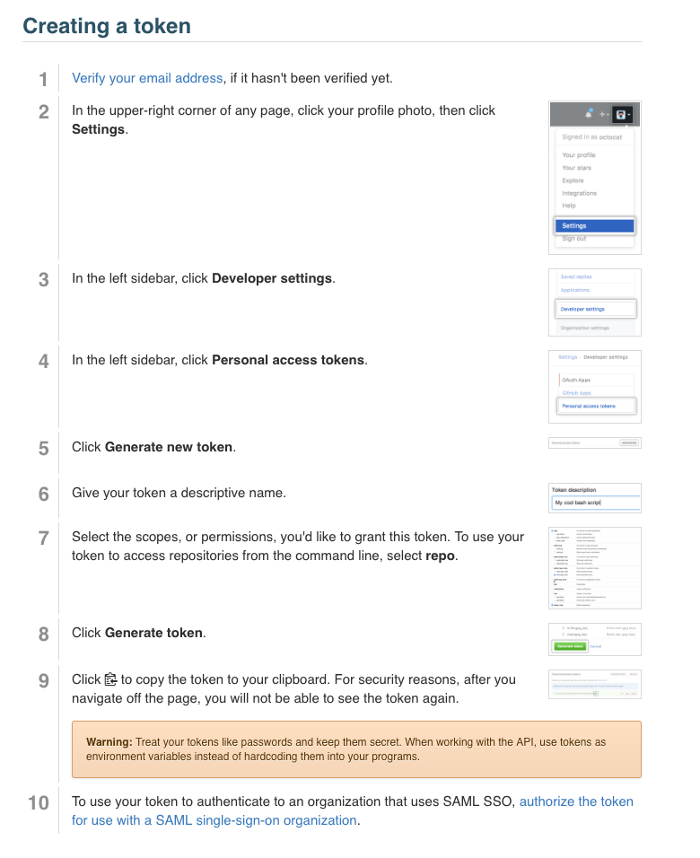
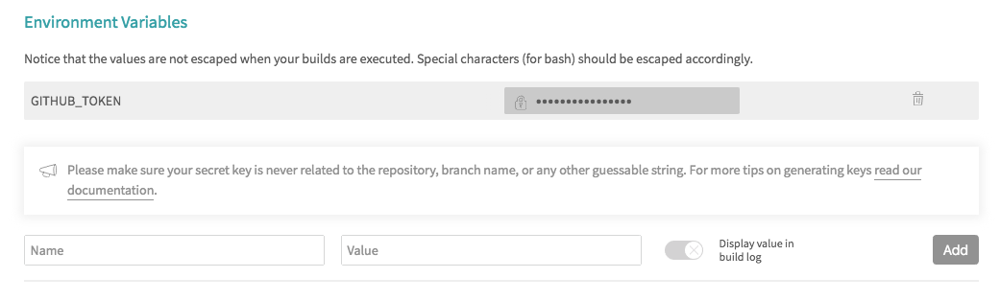
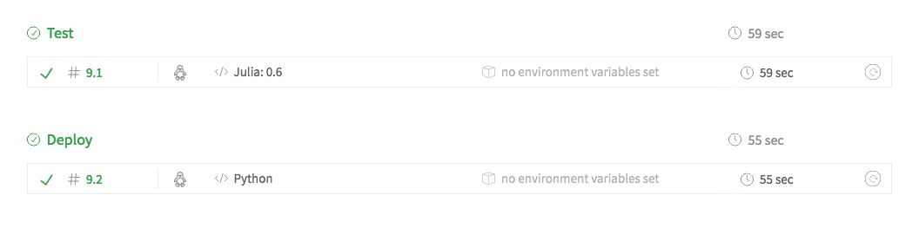

Documentation Set Up
We use MkDocs with Material design for documentation. MkDocs is a powerful static site
generator. The user provides Markdown files and a .yml configuration file
to get started. The Material theme has a modern, responsive, and intuitive interface to complex documentation.
Note
Note that you will need to do this only if you want to build your site locally to preview your docs. You won't be deploying it from your local machine. We use continuous deployment with Travis CI to build and deploy the documentation to GitHub Pages, see Deployment section.
To install MkDocs and MkDocs-Material:
pip install mkdocs==1 mkdocs-material==3.0.3
Create your document files and mkdocs.yml configuration file (see below), and:
mkdocs build mkdocs serve
Navigate to http://127.0.0.1:8000/ to preview your docs.
Documentation Structure
The documentation should go in the docs/ folder in the root of your GitHub project. Assets like
images or with other formats should go in docs/assests. The document files should be Markdown.
The organization of the pages in the static site is set in the configuration file mkdocs.yml, this file also goes in the root of the project.
Note
Note that all CBC projects should have the site_url option set to https://compbiocore.github.io/. This will set the link on the logo to the main porjects site instead.
site_name: Computational Biology Core - Brown University site_author: Fernando Gelin repo_url: https://github.com/compbiocore/cbc-documentation-templates site_description: Documentation templates and best-practices for Brown's Computational Biology Core. site_url: https://compbiocore.github.io/ #this is the main site! theme: name: material palette: primary: 'blue grey' accent: 'indigo' logo: images/cbc-logo.svg extra_css: - styles/dark_mode.css markdown_extensions: - extra - tables - fenced_code - admonition - codehilite - footnotes nav: - Home: 'index.md' - Templates for GitHub: 'readme.md' - Documentation: 'mkdocs.md'
Tip
Go to Markdows Extensions for Material to see detailed information on how to use some of the extensions
listed in markdown_extensions above.
Documentation Structure for R packages
For R packages that use roxygen2 to generate documentation in man/*.Rd the set up is a little different. You will still need a mkdocs.yml file in your root directory as shown above, but in the pages section of the mkdocs.yml use the file names from your man/ and vignettes/ directories, but change the extension to .md.
Attention
The line - Home: 'index.md' is required for R packages. That page will include the contents of the README.md associated with the package.
Also in your root directory create a file called make.R that contains:
# Script to convert .Rd and .Rmd files from man/ and vignettes to docs/*.md for use by MkDocs library("Rd2md") library("knitr") path = "man/" files = dir(path) for(file in files){ infile = file.path(path, file) outfile = file.path("docs", gsub(".Rd", ".md", file)) Rd2markdown(infile, outfile, append = FALSE) } vignette_file = dir("vignettes/") Rmds = vignette_file[grep(".Rmd",vignette_file)] in_ = file.path("vignettes", Rmds) out_ = file.path("docs", gsub(".Rmd", ".md", Rmds)) knit(in_, out_) file_rename = function(from, to) { todir = dirname(to) if (!isTRUE(file.info(todir)$isdir)) dir.create(todir, recursive=TRUE) file.rename(from = from, to = to) } figures = dir("figure/") for (f in figures){ file_rename(from = file.path("figure", f), to = file.path("docs", "figure", f)) } file_rename(from = file.path("README.md"), to = file.path("docs", "index.md"))
This script will convert all .Rd and .Rmd files from man/ and vignettes/ and place them in a new folder called docs/. The vignettes will run on Travis, and the figures will also be placed in the docs/ folder. MkDocs
will use the markdown files from that folder to create the final documentation site.
Deployment
Documentation is deployed continuously with Travis CI, so you don't need to install MkDocs,
although you will have to install it locally if you want to preview your documentation before
it's deployed.
To set up continuous deployment to the project's gh-pages branch, you first need to obtain a GitHub token from GitHub:

Then, on your project's Travis settings, set the environment variable GITHUB_TOKEN and DO NOT check the box to display value during build.
Attention
If you're using the R set up, use the key GITHUB_PAT instead of GITHUB_TOKEN.

Edit your .travis.yml file to use matrix, so we can separate the test and build stages. The test stage is what you would normally run. Tests set up can vary, see Travis CI docs for more information. For the deploy stage, use the set up outlined below. Here we use MkDocs to build the documentation and deploy to GitHub Pages. Note that all the CBC docs should have the CBC logo and a custom style for code blocks. The first six lines in the script section uses the GitHub API to retrieve the css and svg so MkDocs can render the documentation site correctly.
matrix: #allows to set up tests/deploys in different languages/environments. include: #includes all stages of build - stage: deploy # this block builds and deploys the docs, it's in Python. language: python sudo: required dist: trusty install: - sudo apt-get install jq - pip install mkdocs==1 - pip install mkdocs-material==3.0.3 script: - mkdir docs/styles - mkdir docs/images - curl https://api.github.com/repos/compbiocore/cbc-documentation-templates/contents/files/dark_mode.css\?access_token\=$GITHUB_TOKEN > dark_mode.json - jq -r '.content' < dark_mode.json | base64 --decode > docs/styles/dark_mode.css - curl https://api.github.com/repos/compbiocore/cbc-documentation-templates/contents/files/cbc-logo.svg\?access_token\=$GITHUB_TOKEN > logo.json - jq -r '.content' < logo.json | base64 --decode > docs/images/cbc-logo.svg - mkdocs build --verbose --clean --strict deploy: provider: pages skip_cleanup: true github_token: $GITHUB_TOKEN local_dir: site on: branch: master
Warning
If you are using the R set up described above, use the following travis set up for the deploy stage:
matrix: include: #allows to set up tests/deploys in different languages/environments. - stage: deploy # this block builds and deploys the docs, it's in Python. language: python sudo: required dist: trusty install: - sudo apt-get install jq - wget https://repo.continuum.io/miniconda/Miniconda3-latest-Linux-x86_64.sh -O miniconda.sh; - bash miniconda.sh -b -p $HOME/miniconda - export PATH="$HOME/miniconda/bin:$PATH" - hash -r - conda config --set always_yes yes --set changeps1 no - conda update -q conda - conda info -a - conda create -q -n test-env python=$TRAVIS_PYTHON_VERSION - source activate test-env - pip install mkdocs==1 mkdocs-material==3.0.3 - conda install r-knitr r-devtools - R -e 'remove.packages(c("curl","httr")); install.packages(c("curl", "httr"), repos="http://cran.us.r-project.org"); Sys.setenv(CURL_CA_BUNDLE="/utils/microsoft-r-open-3.5.0/lib64/R/lib/microsoft-r-cacert.pem")' - R -e 'install.packages("Rd2md", repos="http://cran.us.r-project.org")' - R -e 'source("https://bioconductor.org/biocLite.R"); biocLite("BiocInstaller"); library(devtools); install_github("compbiocore/qckitfastq",build_vignettes=FALSE)' before_script: - source activate test-env script: - mkdir docs - Rscript make.R - mkdir docs/styles - mkdir docs/images - curl https://api.github.com/repos/compbiocore/cbc-documentation-templates/contents/files/dark_mode.css\?access_token\=$GITHUB_PAT > dark_mode.json - jq -r '.content' < dark_mode.json | base64 --decode > docs/styles/dark_mode.css - curl https://api.github.com/repos/compbiocore/cbc-documentation-templates/contents/files/cbc-logo.svg\?access_token\=$GITHUB_PAT > logo.json - jq -r '.content' < logo.json | base64 --decode > docs/images/cbc-logo.svg - mkdocs build --verbose --clean --strict deploy: provider: pages skip_cleanup: true github_token: $GITHUB_PAT local_dir: site on: branch: master
Travis will show all stages separately: 
Done!
Your documentation site will be available at https://compbiocore.github.io/project-name/.